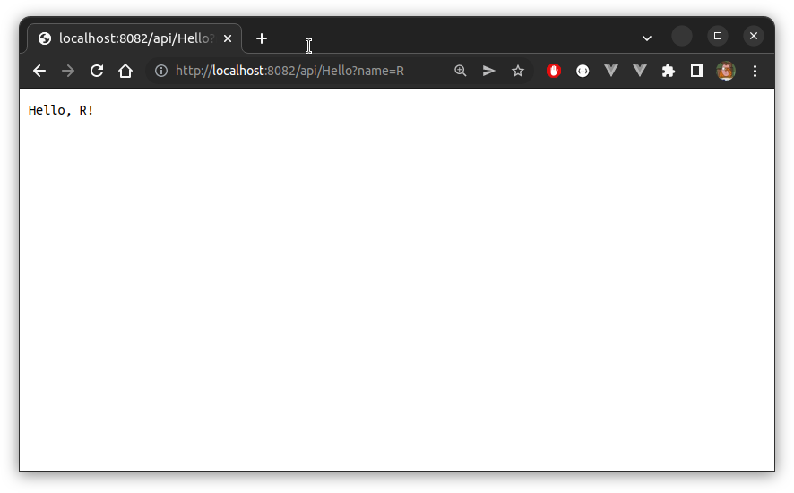

Overview
In a different post we looked at how we could use the official Java handler to create an Azure Function that is written in Scala. This works because Scala and Java are largely interoperable, so were lucky in a sense. If this hadn’t been the case, though, it would still be possible to create a custom handler with Scala which could be used with Azure Functions. In fact, any language that supports basic HTTP primitives can be used this way, making this method quite flexible.
A custom handler is just lightweight webserver which a host Azure Function can forward request to. That is, we write a basic service in our preferred language, and we then interact with it via an Azure Function. Or we could use Azure Functions as an adaptor of sorts, allowing us to redeploy an existing service, and perhaps avoid the need for a complete rewrite.

Hello, Scala!
To demonstrate, we’ll just consider the simple case where a field called name is passed as a query parameter, and the string Hello, ${name}! is returned.
A Scala Service…
Scala has a number of decent libraries available for creating anything from very basic microservices all the way up to complicated web applications. Play Framework is, perhaps, the most popular, but there are others, such as Scalatra or http4s. For illustration here we use Akka HTTP.
We provide our service as an sbt project. The complete project consists of just 4 files, laid out as follows:
hello-scala-akka
├── build.sbt
├── project
│ ├── assembly.sbt
│ └── build.properties
└── src
└── main
└── scala
└── Service.scalaThe files themselves are as follows:
package org.cmhh
import akka.actor.ActorSystem
import akka.http.scaladsl.Http
import akka.http.scaladsl.model._
import akka.http.scaladsl.server.Directives._
import scala.io.StdIn
object Service extends App {
implicit val system = ActorSystem("hello")
implicit val executionContext = system.dispatcher
object routes {
val hello = path("Hello") {
parameters( "name".? ){ name =>
name match {
case None => complete(HttpResponse(
StatusCodes.BadRequest,
entity = "Please pass 'name' as a query parameter."
))
case Some(s) => complete(HttpEntity(
ContentTypes.`text/plain(UTF-8)`, s"Hello, $s!"
))
}
}
}
}
val route = pathPrefix("api") {
get {
routes.hello
}
}
val bindingFuture = Http()
.newServerAt(
"0.0.0.0",
System.getenv("FUNCTIONS_CUSTOMHANDLER_PORT").toInt
)
.bindFlow(route)
}lazy val root = (project in file(".")).
settings(
inThisBuild(List(
organization := "org.cmhh",
scalaVersion := "2.13.8",
version := "0.1.0"
)),
name := "hello-scala-akka",
libraryDependencies ++= Seq(
"com.typesafe.akka" %% "akka-actor" % "2.6.19",
"com.typesafe.akka" %% "akka-http" % "10.2.9",
"com.typesafe.akka" %% "akka-stream" % "2.6.19"
),
scalacOptions += "-deprecation",
assembly / assemblyJarName := "helloscala.jar",
assembly / mainClass := Some("org.cmhh.Service"),
ThisBuild / assemblyMergeStrategy := {
case PathList("reference.conf") => MergeStrategy.concat
case "reference.conf" => MergeStrategy.concat
case "application.conf" => MergeStrategy.concat
case n if n.contains("services") => MergeStrategy.concat
case PathList("META-INF", xs @ _*) => MergeStrategy.discard
case x => MergeStrategy.first
},
)sbt.version=1.6.2addSbtPlugin("com.eed3si9n" % "sbt-assembly" % "1.0.0")Note the use of the environment variable FUNCTIONS_CUSTOMHANDLER_PORT–the Azure Functions host seems to set this variable randomly on start, and expects the custom handler to bind to this port. Either way, to build a fat jar which we can use with our custom function we simply run the following:
sbt assemblyThis will produce target/scala-2.13/helloscala.jar, which we’ll use shortly. In the meantime, we can test this service by itself by running something like:
FUNCTIONS_CUSTOMHANDLER_PORT=9002 java -jar target/scala-2.13/helloscala.jarThe service provides a single end-point, /api/Hello, which we should be able to query as follows:
curl http://localhost:9002/api/Hello?name=ScalaHello, Scala!Not terribly exciting, but functionally sufficient for our purposes.
…As a Custom Handler
We create a folder called HelloScalaHandler, and we copy the helloscala.jar file we created into it (of course, in an enterprise setting, we could automate the build and copy of helloscala.jar, but it’s not important for this demonstration). We create a handful of supporting files, so the layout of the HelloScalaHandler folder is then as follows:
/HelloScalaHandler
├── Hello
│ └── function.json
├── helloscala.jar
├── host.json
└── local.settings.jsonThe contents of these files (helloscala.jar aside), are as follows:
{
"version": "2.0",
"logging": {
"applicationInsights": {
"samplingSettings": {
"isEnabled": true,
"excludedTypes": "Request"
}
}
},
"extensionBundle": {
"id": "Microsoft.Azure.Functions.ExtensionBundle",
"version": "[2.*, 3.0.0)"
},
"customHandler": {
"description": {
"defaultExecutablePath": "java",
"arguments": ["-jar"],
"defaultWorkerPath": "helloscala.jar",
"workingDirectory": ""
},
"enableForwardingHttpRequest": true
}
}{
"IsEncrypted": false,
"Values": {
"AzureWebJobsStorage": "",
"FUNCTIONS_WORKER_RUNTIME": "custom"
}
}{
"bindings": [
{
"authLevel": "anonymous",
"type": "httpTrigger",
"direction": "in",
"name": "req",
"methods": [
"get"
]
},
{
"type": "http",
"direction": "out",
"name": "res"
}
]
}If all went well, we should be able to successfully start our service by running:
func startWe should see the usual splash screen when visiting http://localhost:7071:
And we should be able to reach the service at http://localhost:7071/api/Hello:
curl http://localhost:7071/api/Hello?name=ScalaHello, Scala!Bonus: Hello, R!
To demonstrate the general nature of this approach, let’s choose one other language without an official handler–R. Again, we create a single end-point, /api/Hello, which expects a single query parameter named name, and returns the string Hello, ${name}!.
An R Service…
In R, the Plumber package lets us easily create web services simply by annotating functions in an R script. In this case, our service consists of just the following files:
library(plumber)
#* Say Hello!
#* @param name name to inject
#* @get /api/Hello
function(msg="") {
sprintf("Hello, %s!", name)
}library(plumber)
port <- stroi(Sys.getenv("FUNCTIONS_CUSTOMHANDLER_PORT"))
pr_run(pr("service.R"), port = port)We can run this locally as before by running:
FUNCTIONS_CUSTOMHANDLER_PORT=8082 Rscript run_service.RWe can then browse to something like http://localhost:8082/api/Hello?name=R, which will yield:

…As a Custom Handler
Similar to the Scala example, add our two R scripts to a folder called HelloRHandler, along with several JSON files. The folder has the following layout:
/HelloRHandler
├── Hello
│ └── function.json
├── host.json
├── local.settings.json
├── run_service.R
└── service.Rand the remaining JSON files are as follows:
{
"version": "2.0",
"logging": {
"applicationInsights": {
"samplingSettings": {
"isEnabled": true,
"excludedTypes": "Request"
}
}
},
"extensionBundle": {
"id": "Microsoft.Azure.Functions.ExtensionBundle",
"version": "[2.*, 3.0.0)"
},
"customHandler": {
"description": {
"defaultExecutablePath": "Rscript",
"arguments": ["run_service.R"],
"workingDirectory": ""
},
"enableForwardingHttpRequest": true
}
}{
"IsEncrypted": false,
"Values": {
"AzureWebJobsStorage": "",
"FUNCTIONS_WORKER_RUNTIME": "custom"
}
}{
"bindings": [
{
"authLevel": "anonymous",
"type": "httpTrigger",
"direction": "in",
"name": "req",
"methods": [
"get"
]
},
{
"type": "http",
"direction": "out",
"name": "res"
}
]
}As before, all going well, our service will be available at http://localhost:7071/api/Hello:
And, exactly like the Scala example, we should be able to query our end-point as follows:
curl http://localhost:7071/api/Hello?name=RHello, R!